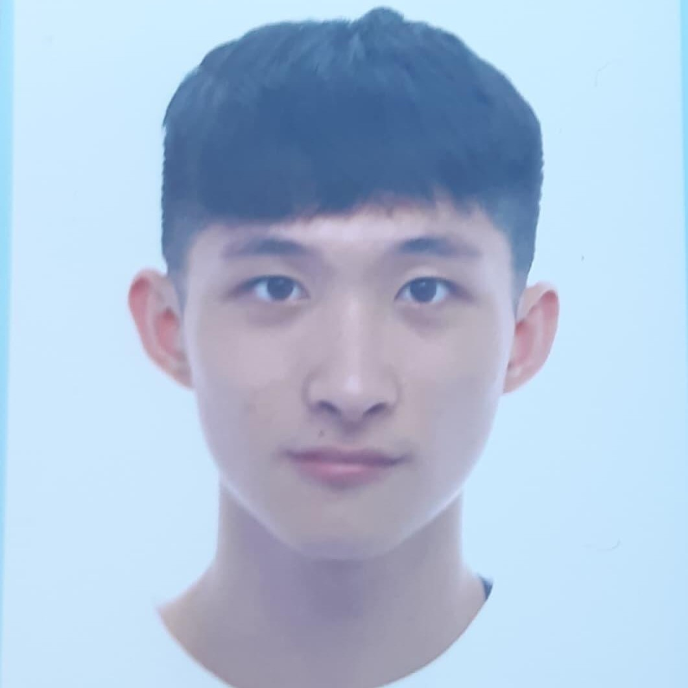

張世澄 | CHANG,SHIH-CHENG
-
學號：10735145
-
系級：資管四乙
-
分工：APP製作、上台報告、簡報製作
在這為期一年的畢業專題中學到了許多東西。從最一開始的題目發想，到接著的實際製作，特別是在技術解決的部分，因為是第一次接觸所以遇到了一些問題，大家都花了許多時間進行研究，並詢問其他人的幫忙。還有最重要的團隊的溝通與配合，大家都有各自負責的部分，組員們都很認真的去做，透過分工合作來完成每一項的任務。最後要感謝指導老師對我們進行的教導，以及組員們這一年來的努力，才能夠完成這次畢業專題的製作。